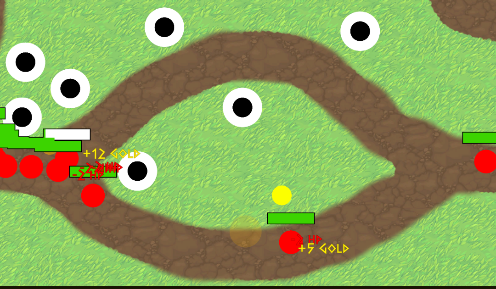

Tower Defense
The Project
In this project I was tasked to make a tower defense game on my own and put a original spin on it. For this project I used the unity engine and I made the the sprites in photoshop. I had 10 weeks to complete this project and did very well for this amount of time.
The execution
The first part of the game was to make a enemy movement script which I did with a waypoint system.
Then I started to work on a tower shooting system and a enemy prediction algorithm.
After that I made a system that chose one of the 3 maps that i made and put the waypoints on the correct spot.
I then made a UI element where you could see how many lives you had left, turn on build mode, activate the next wave and
place the towers in build mode.
Next I made a money system and different enemies that had different stats and could spawn different enemies on death.
Lastly I made a win and lose screen and made the tower bullets explodable.